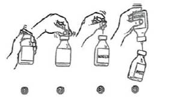

RÉSUMÉ DES CARACTÉRISTIQUES DU PRODUIT
ANSM - Mis à jour le : 21/06/2011
CETOR 100 U/ml, poudre et solvant pour solution injectable
2. COMPOSITION QUALITATIVE ET QUANTITATIVE
Un flacon contient 500 U* de C1 inhibiteur**
Après reconstitution, le produit contient 500 U/5 ml, ce qui correspond à une concentration de 100 U/ml.
*1 U de C1 inhibiteur correspond à la quantité de C1 inhibiteur présente dans 1 ml de plasma frais normal.
**Produit à partir de plasma humain.
L'activité spécifique du C1 inhibiteur est d'au moins 4,0 U/mg de protéine.
Pour la liste complète des excipients, voir rubrique 6.1.
Poudre et solvant pour solution injectable.
Poudre blanche.
4.1. Indications thérapeutiques
CETOR est indiqué dans les cas de déficit congénital en C1 inhibiteur pour le traitement des crises aiguës d'angio-œdème.
4.2. Posologie et mode d'administration
Le traitement par CETOR doit être initié sous la surveillance d'un médecin expérimenté dans le traitement des patients présentant un déficit en C1 inhibiteur. Si le patient est correctement formé, CETOR peut également être administré par auto-administration.
La dose à administrer dépend de la gravité et de la nature de l'attaque. Les doses administrées en règle générale sont les suivantes:
Adultes et enfants de plus de 12 ans
1000 U dès les premiers signes d'apparition d'une crise aiguë et, si le patient n'a pas répondu de manière adéquate au bout de 60 minutes, une seconde dose de 1000 U.
Etant donné les données limitées d'efficacité et de sécurité des inhibiteurs de la C1 estérase disponibles chez l'enfant de moins de 12 ans, aucune recommandation de dosage ne peut être émise pour cette population de patients (voir rubrique 5.1).
La présence d'anticorps anti-C1 inhibiteur peut considérablement réduire la demi-vie de CETOR. Dans ce cas, il est conseillé de mesurer le taux de récupération du C1 inhibiteur (mesure de l'activité fonctionnelle) si l'on suspecte un manque d'efficacité.
Mode d'administration
CETOR doit être administré directement par injection intraveineuse. Il est recommandé de perfuser lentement le produit à un débit de 1 ml par minute.
Hypersensibilité à la substance active ou à un ou plusieurs des excipients.
4.4. Mises en garde spéciales et précautions d'emploi
Dans le cas de patients présentant des anticorps anti-C1 inhibiteur, il faut tenir compte du fait qu'une thérapie initialement réussie peut perdre en efficacité à mesure que la durée du traitement s'allonge. Cela se traduit par une élévation de la gravité et de la fréquence des crises d'angio-œdème.
CETOR contient jusqu'à 24 mg de sodium (environ 1 mmol) par dose de solution à 2000 U. Cela doit être pris en considération chez les patients soumis à un régime contrôlé en sodium.
Chez les patients qui ont présenté une réaction atypique lors d'une administration antérieure de sang ou de produits sanguins, une réaction anaphylactique peut survenir. Il est préférable de ne pas traiter ces patients avec ce produit ni avec d'autres produits sanguins. Si, pour un motif quelconque, vous devez déroger à cette règle, la préparation doit être administrée sous un contrôle clinique étroit.
Les mesures habituelles de prévention du risque de transmission d'agents infectieux par les médicaments préparés à partir de sang ou de plasma humain comprennent la sélection clinique des donneurs, la recherche des marqueurs spécifiques d'infection sur chaque don et sur les mélanges de plasma ainsi que la mise en œuvre dans le procédé de fabrication d'étapes efficaces pour l'inactivation/élimination virale. Cependant, lorsque des médicaments préparés à partir de sang ou de plasma humain sont administrés, le risque de transmission d'agents infectieux ne peut pas être totalement exclu. Ceci s'applique également aux virus inconnus ou émergents ou autres types d'agents infectieux.
Les mesures prises sont considérées comme efficaces vis-à-vis des virus enveloppés tels que le VIH, le VHB et le VHC, et vis-à-vis des virus non enveloppés VHA et parvovirus B19.
Une vaccination appropriée (hépatites A et B) doit être envisagée chez les patients faisant l'objet d'une administration répétée/régulière de produits inhibiteurs de la C1 dérivés du plasma.
L'expérience relative à l'utilisation de CETOR chez les enfants et les personnes âgées est limitée, tout comme celle de l'utilisation de CETOR dans le traitement de l'AAE (angio-œdème acquis).
4.5. Interactions avec d'autres médicaments et autres formes d'interactions
Aucune étude d'interaction n'a été réalisée.
La quantité de données relatives à l'utilisation de C1 inhibiteur chez les femmes enceintes est limitée. CETOR est un composant physiologique du plasma humain. Par conséquent, aucune étude n'a été réalisée sur la toxicité sur la reproduction et le développement chez les animaux et aucun effet nocif n'est attendu sur la fertilité et le développement pré- et post-natal chez les humains.
Aussi, CETOR doit uniquement être utilisé pendant la grossesse dans les cas où son utilisation est indiquée.
Le fait que CETOR soit excrété ou non dans le lait humain reste inconnu.
Lors de la décision de poursuivre ou d'interrompre l'allaitement ou le traitement par CETOR, il convient de tenir compte des bénéfices de l'allaitement pour l'enfant et des bénéfices du traitement pour la femme.
4.7. Effets sur l'aptitude à conduire des véhicules et à utiliser des machines
Les effets sur l'aptitude à conduire des véhicules et à utiliser des machines n'ont pas été étudiés.
Les réactions indésirables suivantes sont basées sur l'expérience post-commercialisation et sur la documentation scientifique. Les catégories standard de fréquence sont utilisées:
Très fréquents ≥ 1/10
Fréquents ≥ 1/100 et <1/10
Peu fréquents ≥ 1/1000 et <1/100
Rares ≥ 1/10000 et <1/1000
Très rares < 1/10000 (y compris les cas individuels rapportés).
|
Classe d'organe |
Très fréquents |
Fréquents |
Peu fréquents |
Rares |
Très rares |
|
|
Troubles généraux et anomalies au site d'administration |
|
|
|
Augmentation de la température, réactions au site d'injection (par ex. éruption) |
|
|
|
Affections du système immunitaire |
|
|
|
Réactions de type allergique ou anaphylactique (par ex. tachycardie, hyper- ou hypotension, rougeur, urticaire, dyspnée, maux de tête, vertiges, nausées) |
|
Pour la sécurité liée aux agents transmissibles, voir rubrique 4.4.
Aucun symptôme de surdosage avec le C1 inhibiteur n'a été rapporté.
5. PROPRIETES PHARMACOLOGIQUES
5.1. Propriétés pharmacodynamiques
Classe pharmacothérapeutique: antihémorragique, antifibrinolytique, inhibiteurs de protéinase, C1 inhibiteur; Code ATC: B02AB03.
Le C1 inhibiteur est un constituant normal du sang humain et l'un des inhibiteurs de sérine-protéase (« serpines »). La protéine fonctionne comme un inhibiteur du système du complément et du système de contact (coagulation intrinsèque). L'inhibition du système du complément résulte de la liaison du C1 inhibiteur à deux des sous-unités actives du premier composant du système du complément (à savoir C1r et C1s). Le système de contact est inhibé par une liaison au facteur XIIa et à la kallikréine.
Si le C1 inhibiteur est absent ou en concentration réduite, ou si le C1 inhibiteur naturellement produit par l'organisme est insuffisamment actif, cela entraîne une symptomatologie périodique dans laquelle la survenue d'œdèmes est prédominante et désignée par le terme d'angio-œdème héréditaire. Pour la prophylaxie et le traitement aigu de cette symptomatologie, un traitement complémentaire avec CETOR a été utilisé.
Aucune étude clinique avec CETOR n'a été réalisée chez l'enfant. Les données d'efficacité et de sécurité des inhibiteurs de la C1 estérase sont limitées chez l'enfant de moins de 12 ans. Aucun problème de sécurité n'a été observé lors de l'utilisation de C1 inhibiteur à la dose de 10 à 20 U/kg de poids corporel ou, alternativement, de 500 U pour les patients pesant jusqu'à 50 kg et de 1000 U pour les patients pesant entre 50 et 100 kg, dans le traitement des crises aiguës d'angio-œdème héréditaire chez l'enfant.
L'expérience concernant l'utilisation de CETOR dans la prophylaxie préopératoire du déficit congénital en C1 inhibiteur est limitée.
L'expérience concernant l'utilisation de CETOR et des produits inhibiteurs de la C1 chez les patients atteints d'angio-œdème acquis est très limitée.
5.2. Propriétés pharmacocinétiques
Absorption
CETOR étant administré par voie intraveineuse, il n'y a pas de phase d'absorption. La biodisponibilité de CETOR administré au patient sera donc de 100 %.
Distribution
Après injection, le taux de récupération in vivo est de 100 %.
Le volume apparent de distribution est de 3,1 l ± 0,1 l.
Elimination
Peu de choses sont connues sur le mécanisme d'élimination dans le corps, mais des données expérimentales indiquent une courbe décroissante monophasique, cohérente avec un modèle à un compartiment ouvert.
La demi-vie d'élimination a été déterminée à 42 heures. Le temps de résidence moyen (temps requis pour que 62,3 % de la dose administrée de C1 inhibiteur soient éliminés; comparable à la demi-vie d'élimination mais calculé indépendamment du modèle utilisé) est de 65 heures. Cela s'applique indifféremment aux individus présentant ou non un déficit en C1 inhibiteur.
La clairance chez l'homme est de 0,053 l par heure.
Le traitement aigu et la prophylaxie préopératoire des angio-œdèmes congénitaux et acquis par C1 inhibiteur sont le traitement de substitution. Par conséquent, les concentrations plasmatiques de C1 inhibiteur ne sont pas seulement indicatrices de la pharmacocinétique, mais représentent également le paramètre pharmacodynamique primaire.
5.3. Données de sécurité préclinique
Le C1 inhibiteur est un constituant normal du corps humain. Les études menées sur l'animal en relation avec le niveau de toxicité ne sont pas fiables car, à des doses supérieures, une surcharge de la circulation survient. Une étude sur la toxicité pour l'embryon/fœtus n'est pas réalisable en raison de l'induction d'anticorps et d'une interférence avec ceux-ci. Les études précliniques consacrées à la pharmacologie de sécurité, toxicité à dose répétée, génotoxicité, potentiel carcinogène, toxicité sur la reproduction et le développement, n'ont pas été réalisées.
Durant la phase de développement de CETOR, une recherche a été menée sur la survenue d'une possible chute de la pression sanguine en utilisant un modèle de rat, sur la formation possible de néo-antigènes (étude menée chez des lapins) et sur la survenue d'effets thrombogènes (à l'aide d'un test décrit par Wessler) après administration du produit. Aucun de ces effets indésirables n'a été observé dans le cadre de ces études.
Poudre: chlorure de sodium, saccharose, citrate de sodium, L-Valine, L-Alanine, L-Thréonine.
Solvant: eau pour préparations injectables.
Ce médicament ne doit pas être mélangé avec d'autres médicaments à l'exception de ceux mentionnés dans la rubrique 6.6.
2 ans.
D'un point de vue microbiologique, le produit doit être utilisé immédiatement. La stabilité chimique et physique en cours d'utilisation a été démontrée pendant 3 heures à température ambiante (15-25°C).
6.4. Précautions particulières de conservation
A conserver à une température ne dépassant pas 25°C. Ne pas congeler. Conserver le flacon dans l'emballage extérieur à l'abri de la lumière.
6.5. Nature et contenu de l'emballage extérieur
CETOR correspond à 500 U de C1 inhibiteur fourni sous forme de poudre en flacon (verre Type I) muni d'un bouchon caoutchouc (bromobutyle) et d'un opercule aluminium et d'un capuchon protecteur plastique.
Le solvant est contenu dans un flacon (verre Type I) muni d'un bouchon caoutchouc (bromobutyle) et d'un opercule aluminium et d'un capuchon protecteur plastique.
6.6. Précautions particulières d’élimination et de manipulation
La poudre doit être dissoute dans le volume de solvant prescrit (5 ml). En cas de conservation à 2-8°C, il est nécessaire d'amener les flacons de CETOR et d'eau pour préparations injectables à température ambiante (15-25°C) avant de dissoudre la préparation.
Procédure avec utilisation d'une aiguille de transfert
1. Retirer les capuchons protecteurs en plastique du flacon contenant l'eau pour préparations injectables et du flacon contenant le produit.
2. Désinfecter les bouchons en caoutchouc des deux flacons à l'aide d'une compresse de gaze imbibée d'alcool (70 %).
3. Retirer le capuchon protecteur de l'une des extrémités de l'aiguille de transfert et insérer l'aiguille dans le flacon contenant le solvant. Retirer ensuite le capuchon protecteur de l'autre extrémité de l'aiguille de transfert, retourner le flacon contenant l'aiguille de transfert et insérer immédiatement l'autre extrémité de l'aiguille dans le flacon contenant la poudre.
4. La sous-pression du flacon contenant la poudre aura pour effet d'aspirer le solvant dans le flacon. Recommandation: pendant le transfert du solvant, le flacon de poudre doit être maintenu en position inclinée de manière à permettre l'écoulement de l'eau le long de la paroi du flacon. Cela permet que le produit se dissolve plus rapidement. Dès que toute l'eau a été transférée, le flacon vide et l'aiguille de transfert doivent être retirés en une fois.

Pour accélérer le processus de dissolution, le flacon de poudre peut être tourné doucement et, si nécessaire, chauffé à 30°C. Le flacon ne doit jamais être secoué ni porté à une température supérieure à 37°C.
Si le flacon est chauffé au bain-marie, l'attention doit être portée afin de s'assurer que l'eau n'entre pas en contact avec le capuchon protecteur et/ou le bouchon en caoutchouc.
Généralement, la matière sèche doit être entièrement dissoute dans les 10 minutes pour former une solution limpide (incolore à bleue claire); la couleur bleue claire est due à la présence de la protéine plasmatique appelée céruloplasmine.
Immédiatement avant administration, la préparation doit être inspectée visuellement pour mettre en évidence la présence de particules ou de grumeaux. Si la préparation n'est pas entièrement dissoute ou si la solution n'est pas parfaitement limpide, ou si des grumeaux se sont formés, la préparation ne doit pas être administrée.
Tout produit non utilisé ou déchet doit être éliminé conformément à la réglementation en vigueur.
7. TITULAIRE DE L’AUTORISATION DE MISE SUR LE MARCHE
STICHTING SANQUIN BLOEDVOORZIENING
PLESMANLAAN 125
1066CX AMSTERDAM
PAYS-BAS
8. NUMERO(S) D’AUTORISATION DE MISE SUR LE MARCHE
· 579 490-9 ou 34009 579 490 9 9: Poudre en flacon (verre Type I) muni d'un bouchon (bromobutyle) et d'un opercule (aluminium) + 5 ml de solvant en flacon (verre Type I) muni d'un bouchon (bromobutyle) et d'un opercule (aluminium)- boîte de 1.
9. DATE DE PREMIERE AUTORISATION/DE RENOUVELLEMENT DE L’AUTORISATION
[à compléter par le titulaire]
10. DATE DE MISE A JOUR DU TEXTE
[à compléter par le titulaire]
Sans objet.
12. INSTRUCTIONS POUR LA PREPARATION DES RADIOPHARMACEUTIQUES
Sans objet.
Liste I.
Médicament soumis à prescription hospitalière.